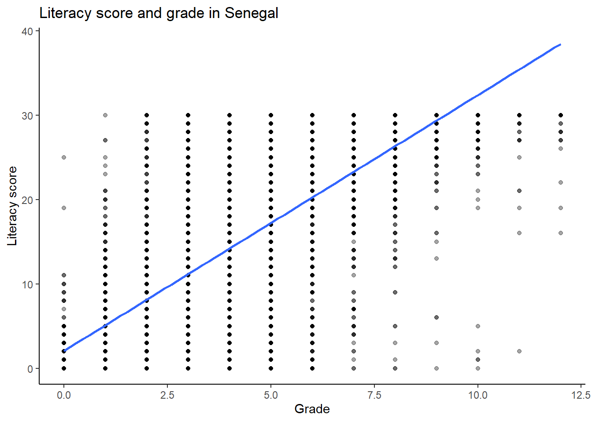

Chapter 6 Simple Linear Regression
Regression analysis describes how an outcome changes as a predictor changes. In this chapter, you will learn how to summarise the association between two numeric variables with a correlation coefficient and how to estimate a simple linear regression model. Because ICAN-ICAR uses a complex survey design, you will also fit the same model with survey weights, clustering, and stratification so that inference reflects the sampling design.
6.1 Preparing variables for analysis
We study the relationship between a child’s grade (ch06a) and a literacy score constructed from item-level responses. Grade is a plausible predictor because it often reflects additional exposure to schooling. Regression can quantify association, but it does not by itself establish causality; use theory and study design to justify causal claims.
Literacy score. The literacy items are coded so that 2 indicates a correct response and 0 or 1 indicates an incorrect response. We recode correct responses to 1, recode incorrect responses to 0, and sum across items. This scoring treats missing item responses as incorrect when it computes totals (na.rm = TRUE). Use a different rule if your assessment protocol defines missingness differently.
# keep observations with non-missing weights (so weighted and unweighted use the same cases)
dat = dat |>
filter(!is.na(HH_Weight_Provided))
# grade (keep plausible values; adjust bounds if your instrument differs)
dat = dat |>
mutate(
grade = ifelse(ch06a >= 0 & ch06a <= 12, ch06a, NA_real_)
)
# literacy items (update these names if your dataset differs)
literacy_items = c(
paste0("l1.", 1:4),
paste0("l2.", 1:5),
paste0("l3.", 1:5),
paste0("l4.", 1:6),
paste0("l5.", 1:5),
paste0("l6.", 1:5)
)
dat = dat |>
mutate(
across(
all_of(literacy_items),
~ case_when(
.x == 2 ~ 1,
.x %in% c(0, 1) ~ 0,
TRUE ~ NA_real_
)
),
literacy_score = rowSums(across(all_of(literacy_items)), na.rm = TRUE)
)For the examples below, we work with one country to keep output readable. Replace the value of country_name to analyse a different country.
6.2 Correlation and simple regression
Correlation provides a first summary of a linear relationship between two numeric variables. A correlation near 0 indicates a weak linear association, while values close to 1 or -1 indicate a strong positive or negative linear association. Because correlation targets linear patterns, treat it as a starting point rather than a complete description.
## [1] 0.7361826A quick check. A scatterplot helps you assess whether a linear relationship is plausible and whether a small number of extreme values dominate the pattern.
ggplot(d, aes(x = grade, y = literacy_score)) +
geom_point(alpha = 0.35) +
geom_smooth(method = "lm", se = FALSE) +
labs(
x = "Grade",
y = "Literacy score",
title = paste("Literacy score and grade in", country_name)
) +
theme_classic()
A simple linear regression model has the form
\[ Y_i = \alpha + \beta X_i + \varepsilon_i, \]
where \(\beta\) (the slope) describes the expected change in \(Y\) for a one-unit increase in \(X\). In our example,
\[ \text{literacy\_score}_i = \alpha + \beta \cdot \text{grade}_i + \varepsilon_i. \]
The unweighted model describes the relationship in the sample.
## # A tibble: 2 × 7
## term estimate std.error statistic p.value conf.low conf.high
## <chr> <dbl> <dbl> <dbl> <dbl> <dbl> <dbl>
## 1 (Intercept) 2.06 0.171 12.1 3.34e-33 1.73 2.40
## 2 grade 3.03 0.0348 87.2 0 2.96 3.106.3 Survey-weighted regression for population inference
To make population statements, fit the regression with the survey design. This approach accounts for weights, clustering, and stratification when it computes standard errors.
options(
survey.lonely.psu = "adjust",
survey.adjust.domain.lonely = TRUE
)
des = svydesign(
ids = ~interaction(CountryName, VillageID) + HHID,
strata = ~interaction(CountryName, Tier_One_Unit),
weights = ~HH_Weight_Provided,
data = dat,
nest = TRUE
)
des_country = subset(des, CountryName == country_name & !is.na(grade) & !is.na(literacy_score))V = svyvar(~grade + literacy_score, design = des_country, na.rm = TRUE)
cor_weighted = V[1, 2] / sqrt(V[1, 1] * V[2, 2])
cor_weighted## [1] 0.7384252## # A tibble: 2 × 7
## term estimate std.error statistic p.value conf.low conf.high
## <chr> <dbl> <dbl> <dbl> <dbl> <dbl> <dbl>
## 1 (Intercept) 2.06 0.265 7.77 5.05e- 13 1.54 2.58
## 2 grade 3.04 0.0407 74.6 1.59e-140 2.96 3.12Interpret the slope as the expected change in the literacy score associated with a one-grade increase, holding the model form fixed. Use the survey-based standard errors and confidence intervals for inference.
Predicted values. Predictions translate the fitted line into an expected score at a specific grade. The example below reports the predicted literacy score for grade 3, with a standard error from the survey model.
## link SE
## 1 11.177 0.21046.4 Practice exercises
- Replace
country_namewith a different country and compare the weighted and unweighted correlations. - Fit the survey-weighted model for one country and interpret the slope in a single sentence.
- Change the prediction grade from 3 to 6. How does the predicted score change?
- Repeat the analysis using
ch02(age) as the predictor instead of grade. Compare the interpretation with the grade model.